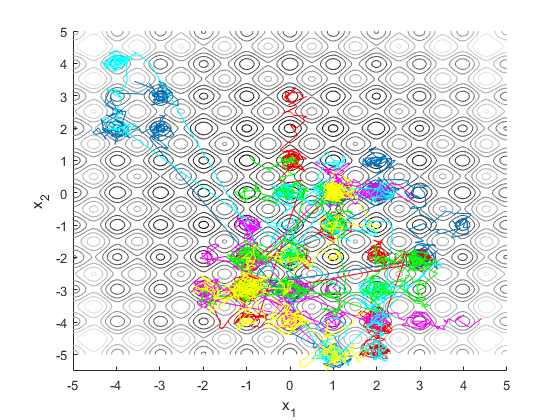
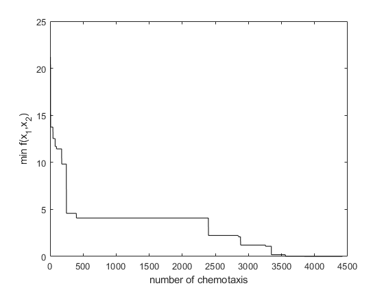

clear all
S = 6;
Nc = 100;
Ns = 4;
Nre = 4;
Ned = 2;
Ped = .25;
Ci = 0.1;
theta_new = ones(2,S/2);
theta = -5+10*rand(2,S);
J = 20+theta(1,:).^2+theta(2,:).^2-10*cos(2*pi*theta(1,:))-10*cos(2*pi*theta(2,:));
count2 = 1;
count3 = 1;
J_best = min(J);
for l=1:Ned
for k=1:Nre
J_health = zeros(1,S);
for j=1:Nc
J_last = J;
delta = -1+2*rand(2,S);
temp1 = delta.*delta;
theta = theta+Ci*delta./sqrt([temp1(1,:)+temp1(2,:);temp1(1,:)+temp1(2,:)]);
J = 20+theta(1,:).^2+theta(2,:).^2-10*cos(2*pi*theta(1,:))-10*cos(2*pi*theta(2,:));
for i=1:S
m = 0;
while m<Ns
m = m+1;
if J(i)<J_last(i)
J_last(i) = J(i);
if J(i)<J_best
J_best(count3) = J(i);
count3 = count3+1;
theta_best = theta(:,i);
elseif count3>1
J_best(count3) = J_best(count3-1);
count3 = count3+1;
end
bacteria1(:,count2) = theta(:,1);
bacteria2(:,count2) = theta(:,2);
bacteria3(:,count2) = theta(:,3);
bacteria4(:,count2) = theta(:,4);
bacteria5(:,count2) = theta(:,5);
bacteria6(:,count2) = theta(:,6);
count2 = count2+1;
theta(:,i) = theta(:,i)+Ci*delta(:,i)./sqrt([temp1(1,i)+temp1(2,i);temp1(1,i)+temp1(2,i)]);
J(i) = 20+theta(1,i).^2+theta(2,i).^2-10*cos(2*pi*theta(1,i))-10*cos(2*pi*theta(2,i));
else
m = Ns;
end
end
end
J_health = J_health+J;
end
temp2 = median(sort(J_health));
count = 1;
for i=1:S
if J_health(i)<temp2
theta_new(:,count) = theta(:,i);
count = count+1;
end
end
theta = [theta_new theta_new];
end
temp3 = rand(1,S);
for i=1:S
if temp3(i)<Ped
theta(:,i) = -5+10*rand(2,1);
end
end
end
x = [-5:0.02:5];
y = [-5:0.02:5];
for i=1:length(x)
for j=1:length(y)
f(i,j) = 20+x(i)^2+y(j)^2-10*(cos(2*pi*x(i))+cos(2*pi*y(j)));
end
end
figure(1);clf;hold on
contour(x,y,f,10)
plot(0,0,'xk')
xlabel('x_1')
ylabel('x_2')
colormap('gray')
plot(bacteria1(1,:),bacteria1(2,:))
plot(bacteria2(1,:),bacteria2(2,:),'r')
plot(bacteria3(1,:),bacteria3(2,:),'m')
plot(bacteria4(1,:),bacteria4(2,:),'c')
plot(bacteria5(1,:),bacteria5(2,:),'g')
plot(bacteria6(1,:),bacteria6(2,:),'y')
figure(2)
plot(J_best,'k')
xlabel('number of chemotaxis')
ylabel('min f(x_1,x_2)')
theta_best
theta_best =
-0.0027
-0.0054
 